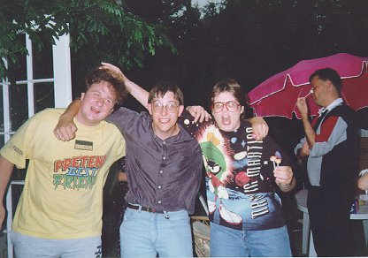

Meet The Excalibur Crew!
Anne Lindup
Don't mess with the Captain of the Excalibur, Anne Lindup - we call her Two Scoops (but only behind her back) {{{:| 'cos her favourite costume is a Klingon (female) Warrior.

Sean Douch
SFC webmaster, and currently studying computing at Southampton University.
He is also the StarFleet Command Webmaster - for the
Excalibur & SFC Homepage
Bea Jones
Our 1st officer. She's also won the Star Trek quiz on the BBC 30th Anniversary evening.
In the club she is probably best known for the anarchy she brings to almost everything she is involved in.
Not bad for a gal going for her doctorate!
Steve is our John DeLancy lookalike. If you want to really annoy him - beat him at cards :)
His position at the Excalibur is head of the junior crew. Among his hobbies, he lists playing with trains.
Meet Pootle. How he got the name, I have no idea. I tend to just call him hamster when I can't remember Pootle -
because he can sleep anywhere, anytime.
 Back to the Excalibur Pages
Back to the Excalibur Pages